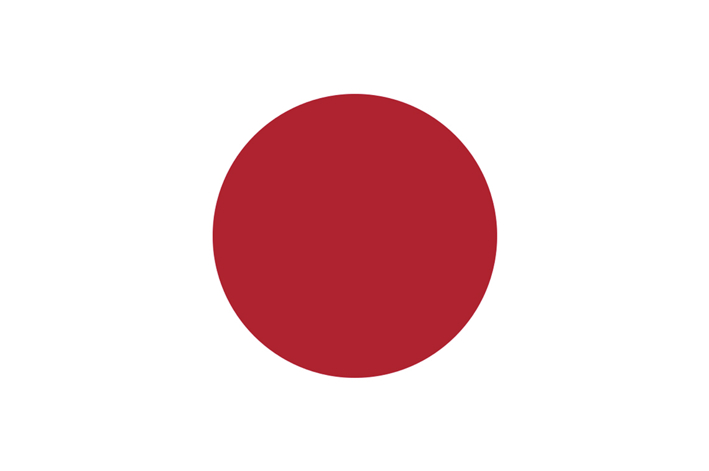
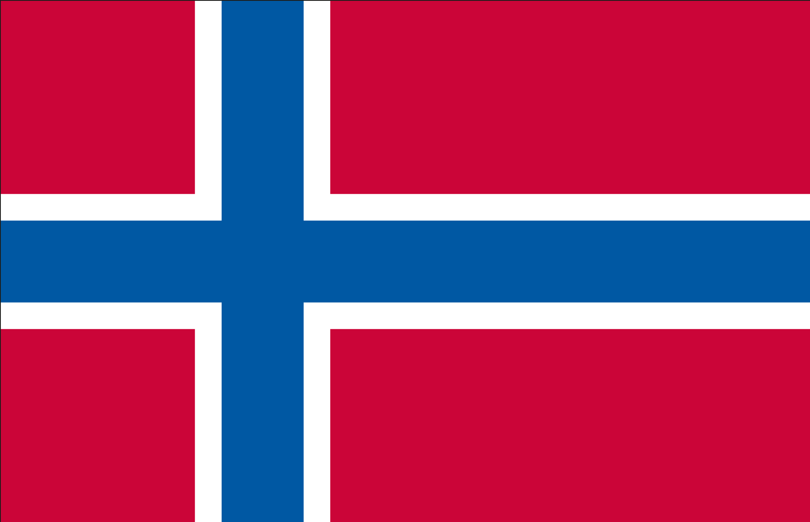
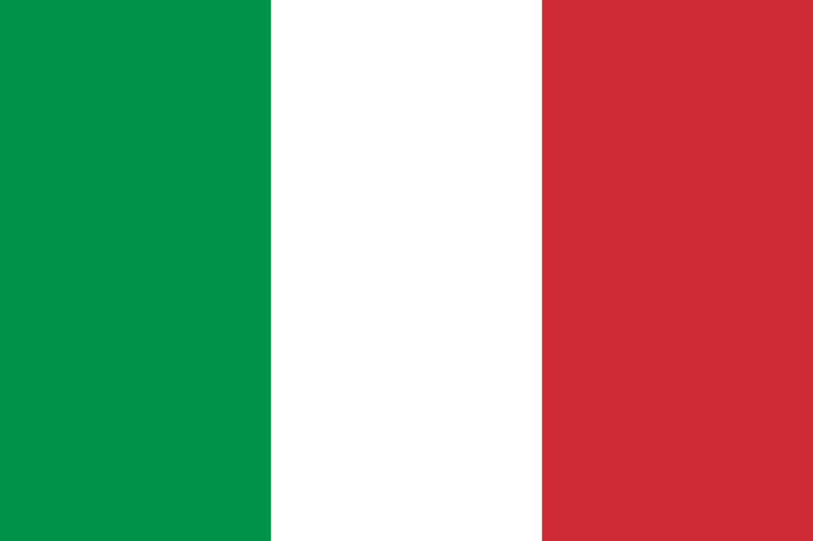

Skincare is een universele zorg die wordt gekoesterd in culturen over de hele wereld, maar de aanpak en de ingrediënten kunnen aanzienlijk variëren op basis van traditionele praktijken, klimatologische omstandigheden en lokale beschikbaarheid van producten. Hier zijn enkele opmerkelijke voorbeelden van skincare in verschillende culturen.
Korea staat bekend om zijn uitgebreide en innovatieve huidverzorgingsroutines. Het omvat stappen zoals dubbele reiniging, het gebruik van toners, essences, serums en sheetmaskers. Koreaanse huidverzorging benadrukt hydratatie en bescherming tegen de zon. Populaire ingrediënten zijn onder andere ginseng, slakkenslijm en groene thee.
Japanse skincare richt zich op eenvoud en precisie. De nadruk ligt op het gebruik van milde producten en het zorgvuldig masseren van de huid om de doorbloeding te bevorderen. Ingrediënten zoals rijstzemelen, camelia-olie en zeewier worden vaak gebruikt. Zonbescherming is een integraal onderdeel van de dagelijkse routine.
In de Ayurvedische traditie worden huidverzorgingsproducten vaak aangepast aan het 'dosha'-type van een persoon (Vata, Pitta of Kapha). Natuurlijke ingrediënten zoals kurkuma, neem, en sandelhout worden vaak gebruikt. Massages met oliën zoals sesamolie zijn ook gebruikelijk.

In Scandinavische landen, waar koude en droge winters heersen, is hydratatie van essentieel belang. Natuurlijke ingrediënten zoals berkenwater, bosbessen en arctische bessenolie worden veel gebruikt. De focus ligt op eenvoudige en effectieve producten.
In landen zoals Italië en Griekenland wordt de huidverzorging vaak geïnspireerd door de overvloedige aanwezigheid van olijfolie en druiven. Deze natuurlijke oliën worden gebruikt voor hydratatie en als basis voor zelfgemaakte maskers. De zon wordt genoten, maar met zorg voor bescherming tegen overmatige blootstelling.
